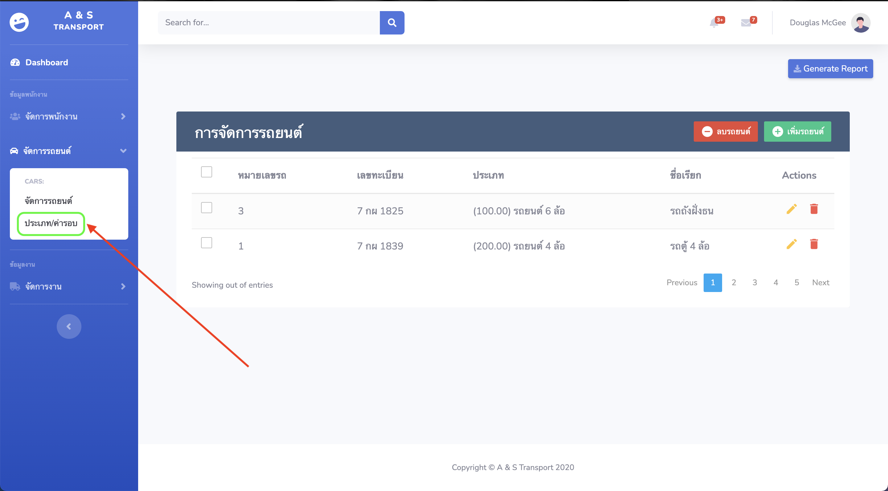
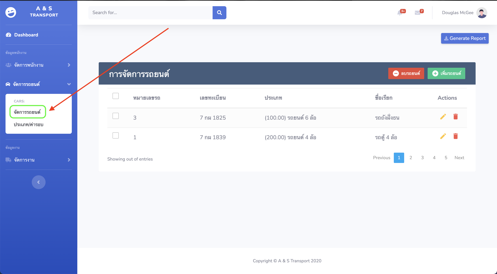
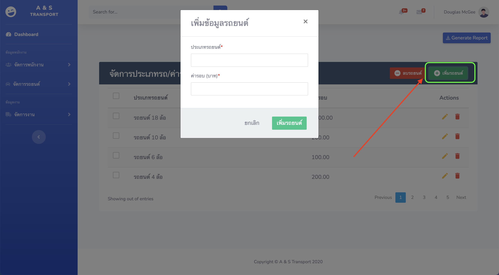
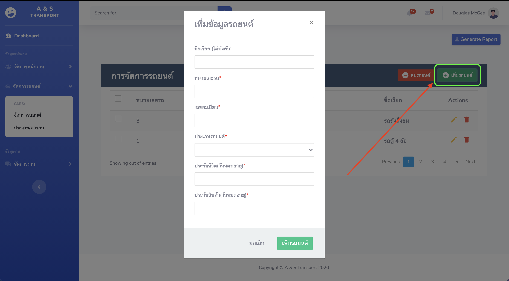
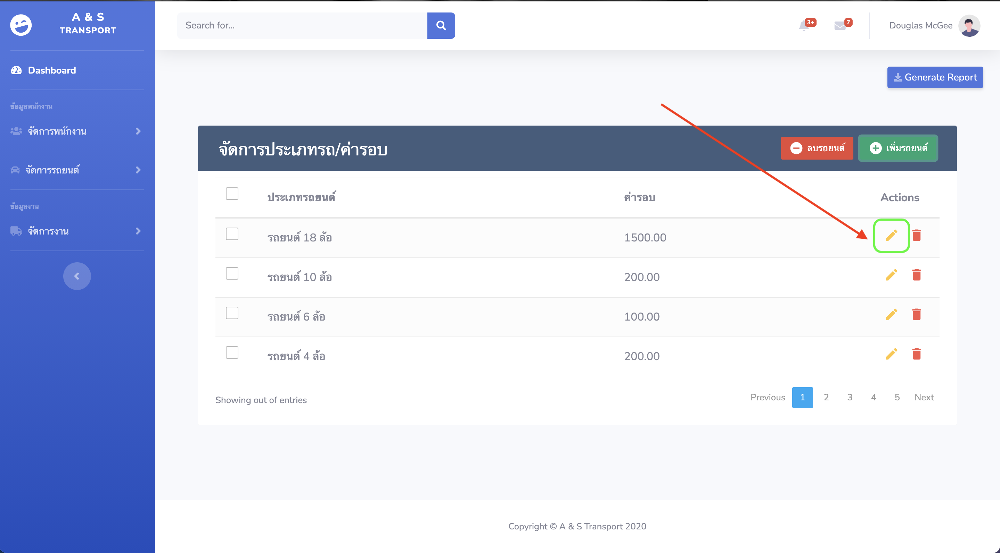
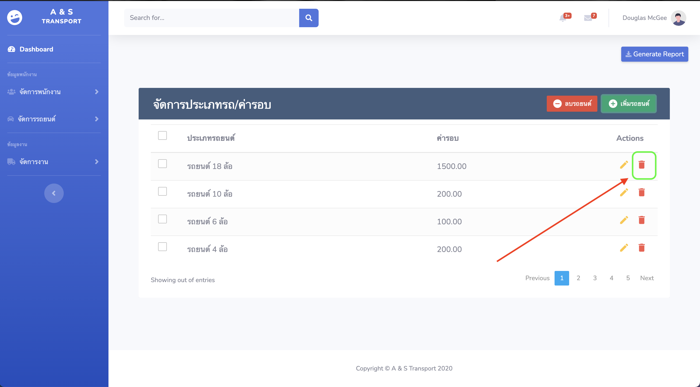

เมนูจัดการรถในบริษัท¶
1.การเข้าเมนูจัดการรถในบริษัท¶
เมนูการจัดการรถในบริษัทแบ่งออกเป็น 2 เมนู ดังนี้
เมนูจัดการประเภท/ค่ารอบ ของรถในบริษัท

เมนูจัดข้อมูลรถในบริษัท

2.การนำเข้าข้อมูลรถในบริษัท¶
การนำเข้าข้อมูลรถในบริษัทให้เริ่มนำเข้าข้อมูลตามลำดับดังนี้
[1] ประเภท/ค่ารอบ ของรถในบริษัท

กรอกข้อมูล ประเภท/ค่ารอบ ของรถในบริษัทเพื่อนำไปใช้ในการคำนวณค่ารอบในการออกทำงาน
[2] ข้อมูลรถในบริษัท

กรอกข้อมูลรถในบริษัทเพื่อนำไปใช้ในการคำนวณค่ารอบในการออกทำงาน (ใช้ในการเลือกรถที่ออกไปพร้อมพนักงาน)
3.การแก้ไขข้อมูลรถในบริษัท (ประเภท/ค่ารอบ, ข้อมูลรถ)¶
การแก้ไขข้อมูล(ประเภท/ค่ารอบ, ข้อมูลรถ)ทำได้โดยเลือกเครื่องหมายรูปดินสอข้างหลังข้อมูลที่ต้องการแก้ไขดังรูป

ให้การแก้ไขข้อมูลบนแถบกรอกข้อมูลที่ปรากฏขึ้นมาจากนั้นกดบันทึก
4.การลบข้อมูลรถในบริษัท (ประเภท/ค่ารอบ, ข้อมูลรถ)¶
การแก้ไขข้อมูลรถในบริษัท (ประเภท/ค่ารอบ, ข้อมูลรถ)ทำได้โดยเลือกเครื่องหมายรูปถังขยะข้างหลังข้อมูลที่ต้องการลบดังรูป
